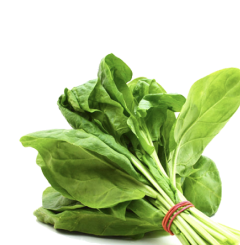

How to plant spinach
correctly in winter


12.09.2021

Spinach is a cool-season plant that’s one of the first crops of spring and a great fall crop as well.
You’ll enjoy growing this undemanding plant and will enjoy eating it even more. Harvest spinach
any time to enjoy raw in salads or cook it up in seconds for a delicious side dish that’s loaded
with vitamins and minerals. If you want to grow spinach in your garden, here’s everything you
need to know.
You can also download my How Do I Grow Spinach? one-sheet and keep the free resource
handy for your reference

When, Where and How to Plant Spinach
Spinach can be either sown directly into the garden or started from seeds indoors. For the least
work and the most convenience, seedlings can also be purchased from a nursery in spring.
To give spinach a head start, plant seeds in sterile seed-starting mix indoors about six weeks
before the last expected frost date. The seeds will germinate one to two weeks later in soil that is
between 60 and 68 degrees. If growing in a room that stays cool, consider using a seed-starting
mat that will raise the temperature of the soil.
Spinach is frost tolerant, so it can go in the ground long before many other crops. When spinach
seedlings have two true leaves and when there are four or fewer weeks remaining until your last
frost date, the seedlings may be transplanted outdoors.
Seeds can be planted outdoors as soon as the soil is workable in spring — about six weeks
before the last expected frost — and they will germinate as the days warm.
To germinate seeds faster and more reliably, there is a process called “priming.” A week before
sowing spinach seeds indoors or out, soak seeds in room temperature water overnight or up to
24 hours. Next, place the seeds on a paper towel to air dry for one or two days. Once the seeds
appear dry, place them in an airtight container and store the container in a cool place. The
seeds will have soaked up and retained enough water to stimulate the first stages of
germination. Wait at least five days, but no more than seven, and sow the seeds.
Primed spinach seeds will germinate both faster and more uniformly: In about five days, the
grass-like seedlings will emerge.

Title was helpful?
Share with friends